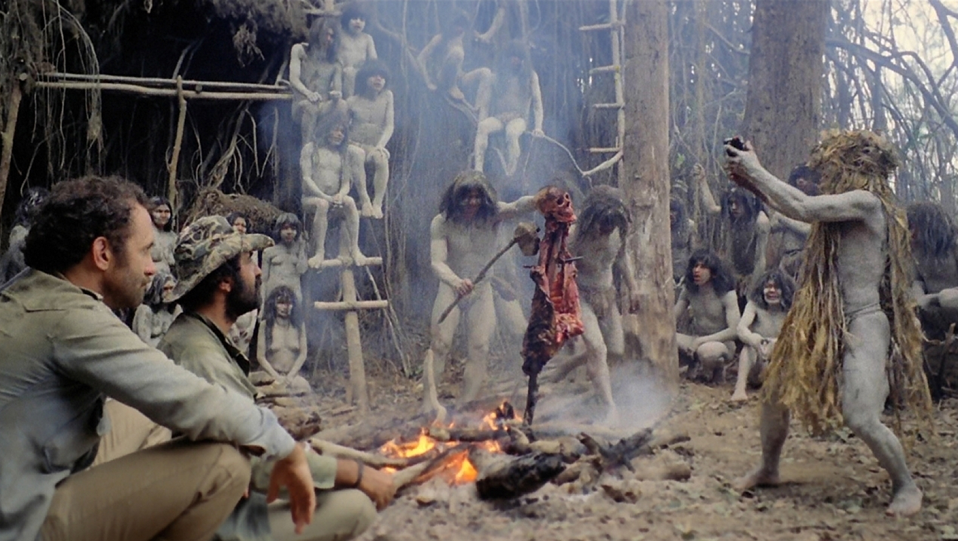
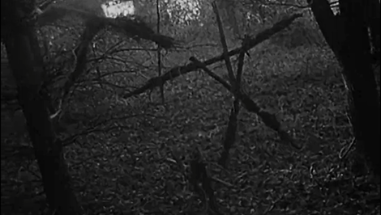
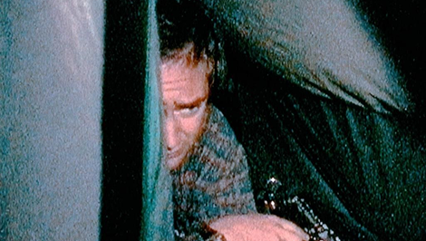
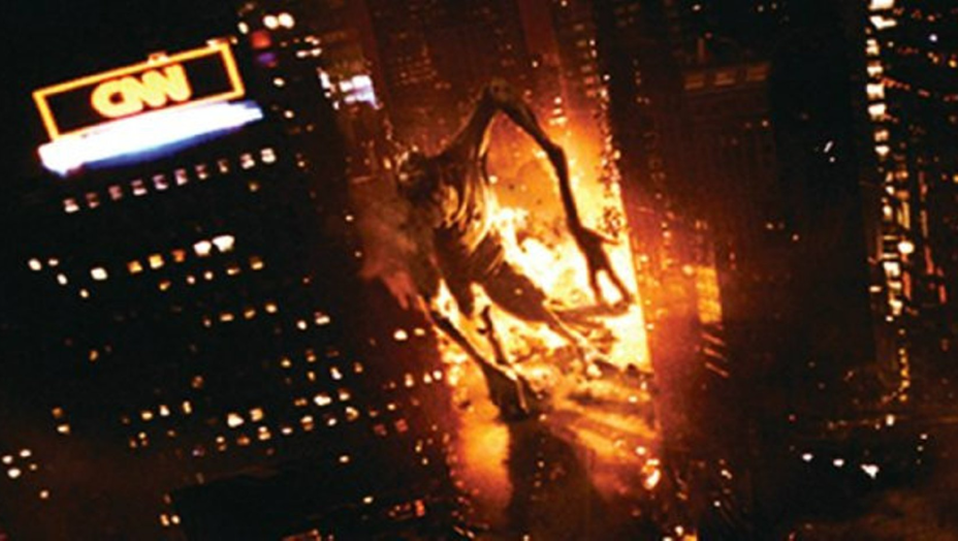
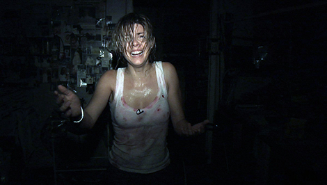
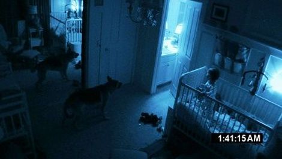
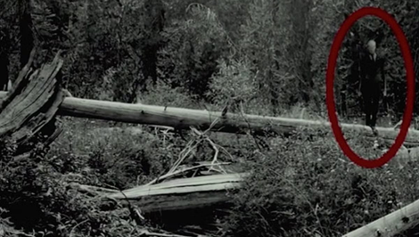
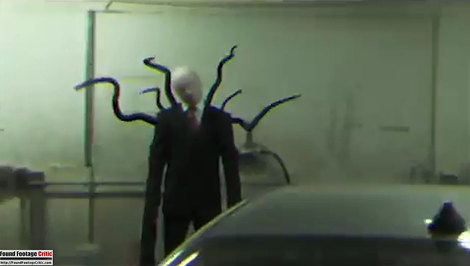

Found footage — это поджанр хоррора, в котором фильм подаётся как якобы реально существующая любительская запись, найденная после трагических событий. Важно не путать его с мокьюментари: мокьюментари имитирует документальный фильм с монтажом, закадровым голосом и интервью, тогда как found footage — это именно «сырая» плёнка, как-будто это снимал кто-то сам и не редактировал.
Корни поджанра уходят в 1980 год, когда итальянский режиссёр Руджеро Деодато снял «Ад каннибалов» — псевдодокументальный хоррор о пропавшей экспедиции в джунглях Амазонки, и впервые ввёл приём «камеры внутри кадра». Фильм был настолько убедителен, что Деодато даже вызвали в суд, чтобы доказать: актёры живы!

Несмотря на ранние эксперименты, по-настоящему поджанр «взорвался» в 1999 году с выходом «Ведьмы из Блэр» Дэниэла Мирика и Эдуардо Санчеса. Создатели сделали нечто революционное для своего времени: ещё до премьеры в интернете публиковались «реальные» полицейские отчёты, фотографии с места исчезновения студентов и вымышленные интервью с их родственниками. Это был один из первых вирусных маркетинговых ходов в истории кино — и он сработал: зрители шли в кинотеатр, реально не зная, правда это или нет.
Бюджет фильма составил около 60 000 долларов, а кассовые сборы превысили 248 миллионов — окупаемость более чем в 13 000 раз.


Секрет воздействия found footage лежит в механизме идентификации. Когда зритель видит дрожащую любительскую камеру, его мозг считывает это как документальные кадры — не кино, а реальность. Академические исследования, в частности работы Санкт-Петербургского государственного университета, отмечают, что found footage сокращает дистанцию между автором и зрителем до минимума.
Этому способствуют конкретные приёмы: почти полное отсутствие саундтрека (музыка может разрушать некую иллюзию реальности), рваное повествование с пробелами и недосказанностью, а также эффект случайности — камера как бы «случайно» фиксирует то, чего не должна была запечатлеть. Страх возникает не от того, что показано, а от того, что как бы подразумевается.
Found footage радикально демократизировал производство хорроров. До его появления качественный ужастик требовал серьёзного бюджета на декорации, CGI и операторскую работу. «Найденная плёнка» перевернула эту логику: трясущаяся камера и зернистая картинка — это не недостаток, а художественный приём.
«Паранормальное явление» (2007) Орена Пели было снято за 15 000 долларов прямо у него дома и собрало в прокате почти 200 миллионов. Это открыло двери для независимых режиссёров по всему миру: испанский фильм [REC] (2007) («Репортаж»), американский фильм «Монстро» (2008), британские и азиатские found footage хорроры, всё это появилось благодаря «Ведьме из Блэр».



Развитие интернета и цифровых технологий оказало на found footage не меньшее влияние, чем сами кинематографисты. YouTube, форумы и социальные сети создали новую культуру «страшных видео», где границы между постановкой и реальностью намеренно размываются.
Исследователи отмечают показательный парадокс: практически бессодержательный ролик на YouTube может напугать сильнее легендарного хоррора — если за ним стоит убедительная мифология. Именно интернет породил такие феномены, как Slender Man или серия видео «Marble Hornets» — found footage, существующий не как фильм, а как сериал на YouTube, разворачивающийся в реальном времени.


Found footage — это была настоящая революция 2000–2010-х, точно так же, как слэшеры в 80-х. Он выкинул из хоррора всё «киношное»: объясняющий диктор, мелодию в момент скримера, глянцевый финал. Когда CGI научился выводить любого монстра в идеальном качестве, found footage показал, что самое страшное — это то, что нельзя до конца разглядеть: размытый силуэт сбоку, пальпы в конце коридора, смех за дверью, когда герой стоит с фонарём.
Поджанр просто напомнил, в чём главная сила хоррора: в неизвестности. А тайна остаётся тайной не потому, что никто не нашёл ответ — а потому что тот, кто донёс до нас эту запись, уже мёртв или сошёл с ума до того, как понял, что происходит.